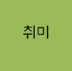
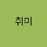

2020.03 ~ 숙명여자대학교 IT공학 재학
ENTJ는 외향,직관,사고,판단형의 유형으로 매사에 열성적이고 대담하며 자신감이 넘치는 타고난 리더형의 통솔자, 지도자 타입이다. 솔직하고 단호한 성격을 갖고 있으며, 어려운 문제에 부딪히면 논리적이고 체계적, 객관적으로 분석해서 현명하게 상황을 잘 해결하는 혁신적이고도 창의적인 성격이 돋보이는 유형이다. 활발하고 외향적인 성격으로 활력과 에너지가 넘치고 특유의 사교적인 성격으로 다른 사람들과 시간을 보내면서 상호작용하는 것을 선호한다. 전략가이자 뛰어난 지도자 스타일로, 대범하며 변화를 두려워하지 않고 미래 지향적인 특징을 가지고 있으며, 숲을 볼 줄 아는 넓은 시야를 가진 유형이다.
 취미
취미자신의 생각과 기분을 다양한 사람들과 만나 소통하고 나누고 싶은 마음이 어렸을 때부터 있어서인지, 어려서부터 다양한 외국어 공부를 하는 것을 좋아하고 열심히 했다. 최근에는, 전공 공부 및 코딩 연습에 시간을 더 투자하느라, 이전보다 외국어 공부하는 시간은 줄어들었지만, 꾸준히 영어공부와 전화영어, 교내 잉글리시 클럽에 참여하고 있다. 방학때나 시간적으로 여유로운 학기에는 중국어를 배우는데, 2020년 처음 중국어를 배운 이후 현재 HSK 5급을 준비하고 있다.
어학공부하는 것을 좋아하는 나에게 있어서, 영화 및 음악 감상은 그동안 배운 언어실력을 늘리는데 도움을 줄 뿐만 아니라, 공부하면서 지치고 포기하고 싶어지는 마음을 다잡게 해주는 긍정적인 원동력이다. 장르불문하고 다양한 종류를 감상하지만, 음악의 경우 국내노래보다는 팝송을 더 즐겨 듣는다.
 Like
Like거의 대부분의 색깔을 좋아하지만, 그중에서도 보라색을 가장 좋아한다. 특별한 의미가 있어 좋아하는 것은 아니지만, 차가운 계열을 대표하는 파랑색과 따뜻한 계열을 대표하는 빨강색이 섞여 만들어진다는 것을 알게 된 후부터 매력적이라는 생각이 들었다. 차가움과 따뜻함의 조화로 만들어진 유채색인 보라색처럼, 냉정한 이성과 따뜻한 감성이 조화롭게 융합된 인재/사람이 되고 싶다는 의지와 다짐으로 가장 좋아하는 색으로 뽑았다.
나는 식물보다는 동물을 더 좋아한다. 동물들 중에서도 강아지를 좋아한다. 현재 나는 강아지를 1마리 키우고 있는데, 이름은 '뚱'이다. 강아지를 키우기 이전보다 신경써야 할 부분이나 귀찮은 일이 많아졌지만, 그 이상으로 뚱이는 기쁨과 위로를 해준다. 앞으로도 건강하게! 행복하게! 잘 지내자 뚱아~
일상에 지치고 피곤하다 느낄 때, 여행을 다녀 온다. '빨리'에 익숙하고 당연하다 생각해 왔던 일상에서 잠시 벗어나 멈춰 자연 및 주변에 소리에 귀를 기울일 수 있기 때문이다. 아직 많은 여행지, 많은 국가를 여행해본 것은 아니지만, 시간과 경제적인 여유가 된다면 그 때마다 여행을 다녀올 계획 및 의지가 있다.
한번쯤 들어본 적 있을 만큼 꽤 유명한 노래, imagine dragons의 believer이다. imagine dragons 특유의 독특한 감성과 가사는 매번 나에게 큰 영감과 매력을 느끼게 만든다. 일렉트로니카 장르와 록 장르를 결합시켜 현재 큰 성공을 한 밴드이며, 시적인 가사와 인디밴드스러운 록 사운드, 일렉 사운드의 접목 그리고 보컬 댄 레이놀즈의 목소리가 인상적이다.
어릴 때 어렴풋한 줄거리가 기억날 뿐 정확하게 기억이 잘 안나서 일부로 찾아서 봤다가 인생영화가 되었다. 줄거리를 요약하면, 어린 사자 심바의 성장스토리인데, 일상 생활에서 겪게 되는 역경, 슬픔이 있을 때, 심바가 이겨내왔던 과정과 방법을 생각하면서 많은 도움과 힘을 얻었고, 얻고 있다.
 보유중인 자격증
보유중인 자격증